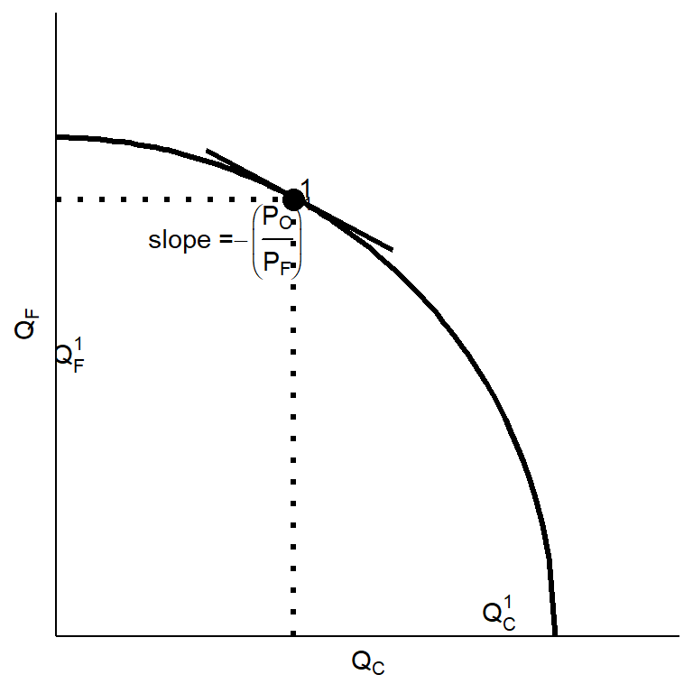
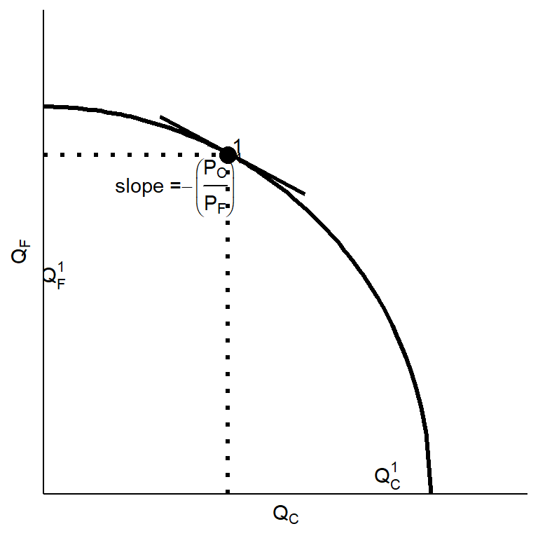
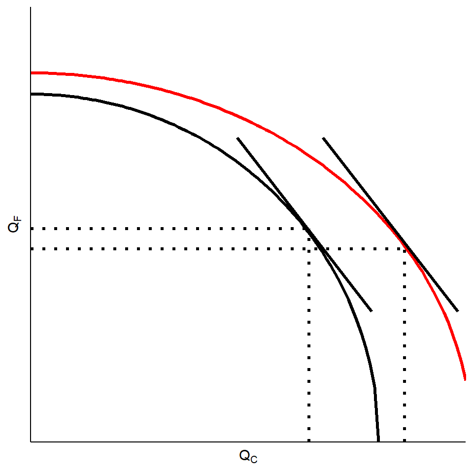

ECES905205 pertemuan 4
I Made Krisna Gupta
12 September 2022
Ricardian: comparative advantage & specialization, everybody happy.
Specific factor: comparative advantage, better in aggregate amid open possibilities / choices.
Both Ricardian maupun Specific Factor model relies on difference in technologies in explaining why two countries trade.
tapi tidak menjelaskan kenapa negara yang teknologinya sama tetap trade.
In addition to difference in technologies, difference in relative abundance of resources can also drive trade.
Here, we also show how different relative factor intensity drives trade.
\[ \frac{a_{LC}}{a_{KC}} > \frac{a_{LF}}{a_{KF}} \\ \frac{L_C}{K_C} > \frac{L_F}{K_F} \]

\[ c_j=wa_{Lj}+ra_{Kj} \]
\[ a_{Kj}=\left(\frac{c}{r}\right)-\left(\frac{w}{r}\right)a_{Lj} \]
Jika pasarnya kompetitif, maka harga barang = costnya (ga ada mark-up)
F>0 artinya:
\[ P_F=a_{LF}(.)w+ a_{KF}(.)r \\ P_C=a_{LC}(.)w+ a_{KC}(.)r \]
full employment berarti semua kapital dan buruh dipakai dalam produksi (ga ada yg nganggur)
artinya:
\[ L=a_{LF}(.)F+a_{LC}(.)C \\ K=a_{KF}(.)F+a_{KC}(.)C \]
if the relative price of a good increases, then the real factor price used intensively in the production of that good increases, while the real price of the other factor decreases.
Perubahan harga akan mempengaruhi distribusi pendapatan antara buruh dan pemilik kapital.
Misalnya \(\frac{P_C}{P_F} \uparrow\) (labor intensive):
\[ P_F=a_{LF}(.)w+ a_{KF}(.)r \\ P_C=a_{LC}(.)w+ a_{KC}(.)r \]
Lakukan total differentiation. karena \(a_{ij}(.)\) dipilih secara optimal, maka perubahan kecil di harga tidak akan berpengaruh.
\[ dP_F=a_{LF}(.)dw+ a_{KF}(.)dr \\ dP_C=a_{LC}(.)dw+ a_{KC}(.)dr \]
\[ \frac{dP_F}{P_F}=\frac{a_{LF}(.)}{P_F}dw+ \frac{a_{KF}(.)}{P_F}dr \\ \frac{dP_C}{P_C}=\frac{a_{LC}(.)}{{P_C}}dw+ \frac{a_{KC}(.)}{P_C}dr \]
\[ \frac{dP_F}{P_F}=\frac{a_{LF}(.)w}{P_F}\frac{dw}{w}+ \frac{a_{KF}(.)r}{P_F}\frac{dr}{r} \\ \frac{dP_C}{P_C}=\frac{a_{LC}(.)w}{{P_C}}\frac{dw}{w}+ \frac{a_{KC}(.)r}{P_C}\frac{dr}{r} \]
maka:
\[ \hat{P_F}=\theta_{LF}\hat{w}+\theta_{KF}\hat{r} \\ \hat{P_C}=\theta_{LC}\hat{w}+\theta_{KC}\hat{r} \]
Misalnya harga cloth naik (\(\hat{P_C}>0\)) tapi harga food tetap (\(\hat{P_F}=0\))
\[ 0=\theta_{LF}\hat{w}+\theta_{KF}\hat{r} \\ \hat{P_C}=\theta_{LC}\hat{w}+\theta_{KC}\hat{r} \]
dapat dipastikan bahwa salah satu factor price harus naik dan satunya lagi pasti turun.
Ingat bahwa C itu cenderung labor intensif. artinya:
\[ \frac{\theta_{LF}}{\theta_{KF}}<\frac{\theta_{LC}}{\theta_{KC}} \]
Artinya, “bobot” yang diberikan untuk \(\hat{w}\) lebih tinggi di \(C\) daripada di \(F\). Krn \(\hat{P_C}>0\), maka dapat dipastikan \(\hat{w}>0\) dan \(\hat{r}<0\).
\[ \hat{w} > \hat{P_C} > 0 > \hat{r} \]
Jika harga output tidak berubah dan salah satu faktor produksi bertambah jumlahnya, maka produksi dari barang yang intensif diproduksi oleh faktor tersebut akan meningkat, dan produksi barang yang intensif faktor lainnya akan berkurang.
Dengan kata lain, jumlah faktor yang melimpah akan mempengaruhi produksi dan distribusi pendapatan.

\[ \hat{L}=\lambda_{LF}\hat{F}+\lambda_{LC}\hat{C} \\ \hat{K}=\lambda_{KF}\hat{F}+\lambda_{KC}\hat{C} \]
\[ \hat{L}=\lambda_{LF}\hat{F}+\lambda_{LC}\hat{C} \\ 0=\lambda_{KF}\hat{F}+\lambda_{KC}\hat{C} \]
\[ \hat{C}>\hat{L}>0>\hat{F} \]
The country that is abundant in a factor exports the good whose production is intensive in that factor
secara umum:
Countries tend to export goods whose production is intensive in factors with which the countries are abundantly endowed.
see Alan Deardorff “the general validity of the Hecksher-Ohlin theorem.”
Di home, perdagangan sangat menguntungkan bagi buruh karena mereka bisa ekspor (\(P_C>P_C^*\)) dan bisa konsumsi makanan dengan harga lebih murah (\(P_F>P_F^*\))
Sebaliknya, di foreign, trade menguntungkan pemilik kapital.
Owners of a country’s abundant factors gain from trade, but owners of a country’s scarce factors lose
hasil ini serupa dengan specific factor model: pemilik faktor yang mengalami kompetisi impor merugi.
insight dari H-O mengatakan bahwa winner-loser ini akan ada bahkan di long-run.
Bagaimana dengan Indonesia?
factor intensity in Indonesia (Amiti and Konings 2007 “Trade Liberalization, Intermediate Inputs, and Productivity: Evidence from Indonesia”)
pada kenyataannya, faktor tidak hanya dua.
Kapital, labor skilled dan unskilled, land, natural resources, dan lain sebagainya.
H-O memberi gambaran bahwa bahkan jika dua negara memiliki teknologi yang sama persis, perbedaan resources akan membuat mereka trade.